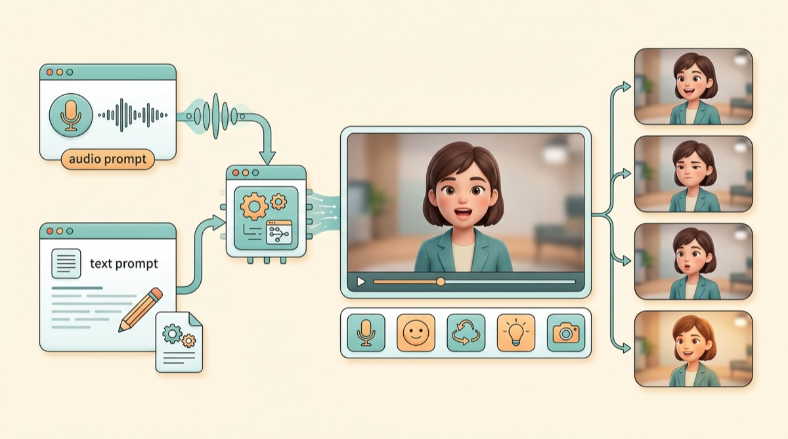
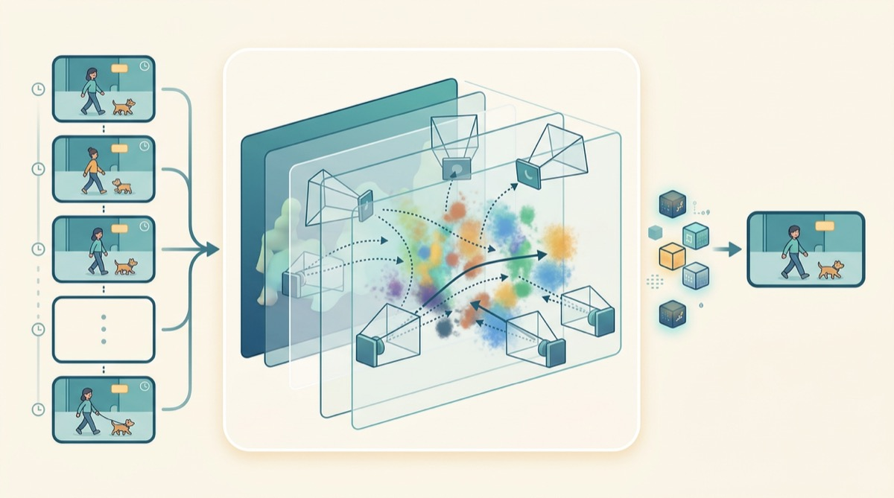
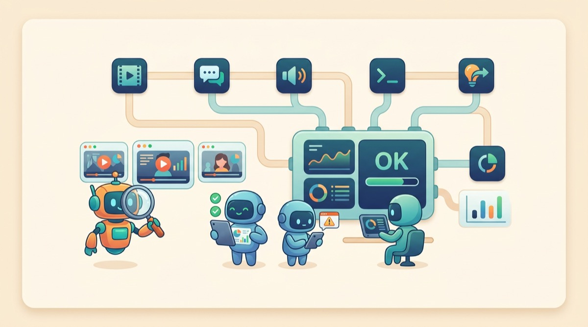

Human-Centric Video Generation
Building controllable and interactive digital humans that can communicate naturally through audio, motion, expression, and video.
I work on structured spatiotemporal modeling for generative and multimodal systems, with a focus on human-centric video generation, efficient 3D/4D world representation, and multimodal evaluation.
My recent work at Li Auto Foundation Models centers on digital humans, video generation systems, 4D/world representations, and multimodal evaluation. Before that, I received my Ph.D. from Beijing Institute of Technology, where I worked on 3D human modeling and reconstruction.
research

Building controllable and interactive digital humans that can communicate naturally through audio, motion, expression, and video.

Learning compact spatiotemporal representations that connect video generation, 4D scene understanding, and future-world prediction.

Designing evaluation protocols and agentic systems that make multimodal models more measurable, reliable, and useful in workflows.
news
selected work
I am exploring real-time interactive digital-human generation for continuous multimodal dialogue, as well as 4D-guided video generation world models.
professional service
Conference Reviewer
NeurIPS · CVPR · ECCV · AAAI
Journal Reviewer
IEEE Transactions on Multimedia (TMM)